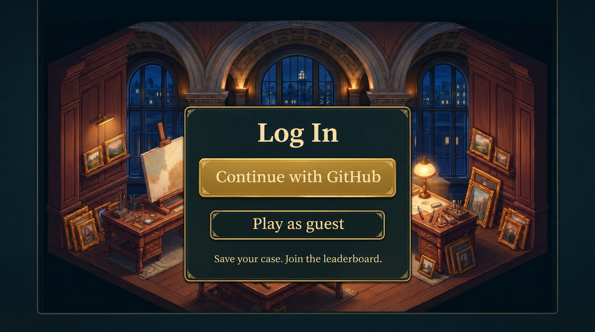
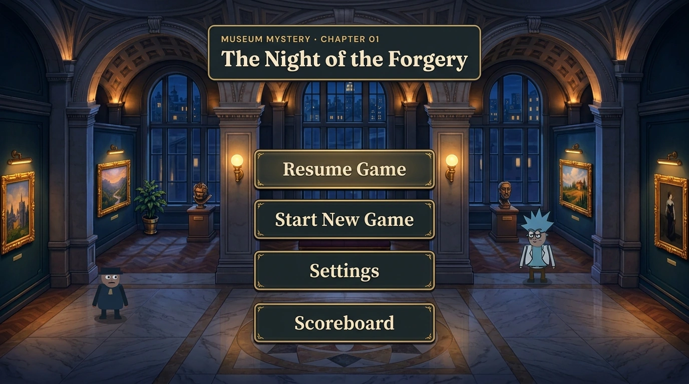

Fictional museum and characters. Artwork data and image: The Metropolitan Museum of Art, Open Access.


Move with WASD or arrow keys. Press E to inspect.
Loading shared results…
Your best winning result appears here automatically after the case ends. Ties share a place.
Your current case progress will be erased.
Fictional museum and characters. Artwork data and image: The Metropolitan Museum of Art, Open Access.